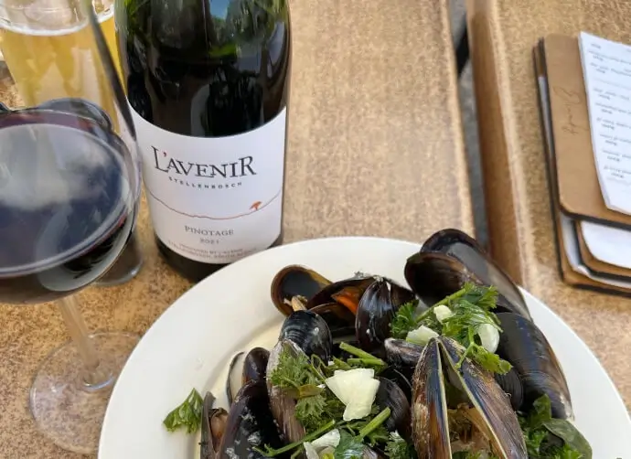

Тревел
Россия и Южная Африка
Южная Африка и Россия — сложно найти две более непохожие страны. Огромная северная держава, в которой проживает преимущественно белокожее население, и самая южная страна Африканского континента, где 8 из 10 жителей родились с чёрным цветом кожи.
От самого известного города ЮАР, Кейптауна, до Москвы 16 тысяч километров. Это 11 дней на машине. Но мало кто из автолюбителей рискнёт ехать через всю Африку.
На самолете
лететь 18 часов
Непременно с пересадкой. Прямых рейсов нет. С конца декабря прошлого года стороны ведут переговоры, чтобы одна из российских авиакомпаний организовала прямой перелёт до Кейптауна.
Но ценник билета может получиться неподъёмным — около 50 тысяч рублей. Сегодня же с пересадкой можно добраться
за 35 тысяч.
за 35 тысяч.
Но Россию и ЮАР (местные говорят просто «Южная Африка») связывает многое.
И даже удивительно насколько: это политические, исторические, военные, личные и даже кулинарные взаимоотношения.
И даже удивительно насколько: это политические, исторические, военные, личные и даже кулинарные взаимоотношения.
В них мы и пытались разобраться, когда сели на арабский рейс Москва – Йоханнесбург и полетели в одну из четырёх столиц этого далёкого радужного государства.
«Радужная нация»
ЮАР — лишь одно из 55 государств Африканского континента
И это самое крупное и влиятельное государство к югу от пустыни Сахара. Государство Южная Африка называет себя радужной нацией. В ЮАР 12 официальных языков и свыше десятка национальностей.
Про языки стоит сказать подробнее
Самых известных — два. Это английский и африкаанс. Африкаанс используется только здесь, это преобразованный голландский. Это самый молодой язык на земле, ему около 200 лет.
Исходно голландский язык со временем видоизменился и напитался африканским колоритом. Остальные языки уже исконно африканские.
Их используют народы банту — это чернокожие племена, группа народностей, которые являются этническим большинством в стране.
Исходно голландский язык со временем видоизменился и напитался африканским колоритом. Остальные языки уже исконно африканские.
Их используют народы банту — это чернокожие племена, группа народностей, которые являются этническим большинством в стране.
Плавильный котел
Страну вполне можно было бы назвать плавильным котлом, то есть местом, где различные народы, культуры, языки и верования становятся единым народом. Но определение "плавильный котёл" в XIX веке присвоили себе США, поэтому южноафриканцы придумали "радужную нацию".
Вопреки стереотипам
не всё население Южной Африки чернокожее — таких лишь 80%. В стране также проживают индийцы, китайцы, представители смешанного населения. А около 9% жителей ЮАР белокожие. Это потомки британцев, а чаще буров — голландских переселенцев, которые основали первое государство в окрестностях мыса Доброй Надежды.
Засыпает город — просыпается мафия
Мы сперва полетели не к мысу Доброй Надежды, а в Йоханнесбург. Можно назвать этот город четвёртой столицей государства. По количеству столиц Южная Африка перегнала Россию. И если мы можем похвастаться только официальной — Москвой и культурной — Санкт-Петербургом, то здесь устройство сложнее.
В Кейптауне находится парламент страны, в Блумфонтейне располагаются суды, в городе Претория сидят президент и правительство. Шестимиллионный Йоханнесбург, который находится рядом с Преторией, называют финансовой столицей.
В Кейптауне находится парламент страны, в Блумфонтейне располагаются суды, в городе Претория сидят президент и правительство. Шестимиллионный Йоханнесбург, который находится рядом с Преторией, называют финансовой столицей.
Самый богатый и самый опасный город в стране.
Иностранцам настойчиво советуют селиться в дорогих районах. Один из таких — Сэндтон. Небоскрёбы и мощёные тротуары, фонтаны и статуи — сперва нет ощущения, что ты приехал в Африку. Скорее в США. Но ЮАР — страна контрастов.
В этом мы впервые убедились, когда поселились в гостиницу. Она называлась Marriott Balalaika. И вряд ли есть ещё одно место в мире, где два этих слова будут уживаться по соседству.
Причина появления такого названия не ясна. Якобы владелец этого отеля в 90-е годы ездил в России и там услышал диковинное слово, которое ему понравилось. Так русская балалайка перекочевала на Африканский континент.
Однако внешняя лощёность района ограничивается несколькими кварталами. И после захода солнца иностранцам там лучше не появляться. Убить, может, не убьют, но ограбить могут, утешают местные. Чаще всего грабителями бывают рабочие мигранты.
В зажиточный Йоханнесбург приезжают мигранты из соседних нищих Зимбабве или Ботсваны. Но жертве всё равно, кому отдавать деньги: приезжему или местному жителю. Уровень преступности в ЮАР необычайно высок. И показательной чертой Йоханнесбурга для нас стали электрические заборы.
Ограда под током украшает практически каждый частный дом, а также посольства, банки, школы и даже единственный на юге Африки православный храм.
Православие
в ЮАР
Храм преподобного Сергия Радонежского блестит куполами в районе Мидранд на окраине Йоханнесбурга
Привычная в российских городах церковь смотрится диковинно в окружении пальм. Неподалёку находится небольшой аэропорт. Поэтому лёгкие одномоторные самолёты используют купола как ориентир для разворота и пролетают мимо храма каждые 5–10 минут.
По периметру храм ограждён высоким металлическим забором и обтянут проводами под электротоком. На ночь храм ставится на сигнализацию. Православный храм в ЮАР открылся в 2003 году. Хотя идея зародилась ещё в середине 90-х годов.
По периметру храм ограждён высоким металлическим забором и обтянут проводами под электротоком. На ночь храм ставится на сигнализацию. Православный храм в ЮАР открылся в 2003 году. Хотя идея зародилась ещё в середине 90-х годов.
Россияне в Южной Африке не самые частые гости.
Но с момента установления дипотношений между странами в 1992 году здесь было три волны приезжих с постсоветского пространства. В начале 90-х годов, когда распался СССР, сюда переезжали высококвалифицированные специалисты.
Инженеры с постсоветского пространства заменяли западных спецов.
Но с момента установления дипотношений между странами в 1992 году здесь было три волны приезжих с постсоветского пространства. В начале 90-х годов, когда распался СССР, сюда переезжали высококвалифицированные специалисты.
Инженеры с постсоветского пространства заменяли западных спецов.
В 1994 году пал режим апартеида, и многие белые спешно покидали страну, опасаясь жестокости со стороны чернокожего населения. В начале нулевых сюда потянулись русские девушки в поисках завидных женихов среди бурских юношей. И последние несколько лет сюда переезжают молодые люди, которые хотят открыть в ЮАР стартапы, свой бизнес либо же работают на удалёнке.
Из такого пёстрого состава жителей бывшего СССР и сформировалась община храма. В ней свыше 100 человек. И церковь для многих не только место для молитвы, но и клуб для встреч. Какого-то другого знакового места для русскоязычной общины вроде Русского дома в ЮАР нет. Настоятель храма отец Даниил возглавил храм в 2010 году. До этого он возглавлял московский храм святой Екатерины на Ордынке. Сегодня он единственный православный священник РПЦ к югу от Сахары.
Среди прихожан выходцы со всего бывшего СССР и даже представители местных жителей. Так, один из прихожан — чернокожий житель ЮАР из племени венду. Он заинтересовался православием и периодически посещает храм в те дни, когда раз в месяц ведутся службы на английском языке.

ЮАР: бедность и богатство
Бедность и роскошь в ЮАР уживаются по соседству
Богатые могут жить в роскошных виллах в элитных районах под круглосуточной охраной и видеонаблюдением. Бедные же ютятся в летних домиках, сооружённых из шифера и палок. Такие трущобы возникают на окраинах крупных городов. В ЮАР очень бережное, но в то же время странное, на наш взгляд, отношение к частной собственности.
Так, по одному из местных законов собственностью считается любой построенный дом, не снесённый за 72 часа. Поэтому периодически в ЮАР совершаются захваты территорий.
Бедные жители строят свои лачуги вдали от внимания официальных властей.
Не успеют те оглянуться, как на пустыре вырос небольшой посёлок. А снести самострой, ставший частной собственностью, власти уже не имеют права.
Не успеют те оглянуться, как на пустыре вырос небольшой посёлок. А снести самострой, ставший частной собственностью, власти уже не имеют права.
Такие самострои называются тауншипы — города-корабли, видимо, переплывающие с места на место. Одно из таких мест находится недалеко от Йоханнесбурга. Посёлок называется Манзивиль, в нём живёт 40 тысяч человек, а есть такие же поселения по миллиону жителей.
По улицам посёлка бегают дети, играют с резиновыми шинами от велосипедов. Взрослые жарят сосиски на древнем мангале. Через дорогу от посёлка двое мужчин копаются в мусорных баках — недалеко мусорный завод. Внутри посёлка узкие улочки ведут от домика к домику. Такие летние сооружения больше всего напоминают дачи в садовых обществах.
Средняя зарплата
в ЮАР
По словам местных жителей составляет 14 000 рандов. Ранд — местная валюта. Яркие купюры с Нельсоном Манделой на одной стороне и африканским животным, носорогом или жирафом, — на другой. Курс ранда к рублю — 1 к 4.
Итого средний южноафриканец живёт в месяц на 56 000 рублей, при сравнимых с Москвой ценах на продукты, но куда более дорогих коммунальных услугах, медицине и страховках, которые нужны практически на всё.
ЮАР: природа
и охота
Южная Африка
Прекрасная страна для путешествий. Здесь есть что посмотреть. Хотя ЮАР и занимает лишь 1% всей суши, на этой скромной площади цветёт 10% от всей растительности Земли и живёт 6% от всех животных, птиц и насекомых. И даже советский доктор Айболит, который под деревом сидел и лечил то корову, то волчицу бывал где-то в этих краях, потому что река Лимпопо тоже протекает по территории ЮАР. Правда, гораздо севернее.
Национальные парки
Одна из главных достопримечательностей и поводов для гордости жителей ЮАР. Здесь их множество: от небольших частных до такого гиганта, как парк Крюгера. Но во всех вы сможете увидеть экзотических животных в привычных условиях. Зебры, львы, крокодилы — перечислять долго.
Впрочем, на животных можно не только смотреть, но и охотиться. Обратившись к официальному агенту и оформив лицензию, охотник может пойти в прерии. Ценник на животных разный: от 500 долларов за бородавочника (Пумба из «Короля льва»)
до 3000 долларов за льва (Симба, прости).
до 3000 долларов за льва (Симба, прости).
Охота подразумевает и то, что главной едой южноафриканцев является мясо во всех его видах. Национальный перекус ЮАР называется билтонг — это вяленые куски говядины. Но билтонг также делают из страуса или дикой косули. При желании можно попробовать и крокодила.
Заплатив 400 рублей на крокодиловой ферме, вы получите огромный кусок отбивной с картошкой фри, чтобы убедиться, что крокодил по вкусу почти такой же, как курица.
Правда, с лёгким оттенком рыбы.
Правда, с лёгким оттенком рыбы.
Мясо крокодила с картошкой фри
ЮАР: еда и цвета
Поесть в ЮАР любят
И об этом наглядно говорят порции. Есть на Африканском континенте и русский след — блюдо Russian with fries («Русские с картошкой»). Это сосиски и фри.
В России известны только венские сосиски с кусочками жира.
В Африке же есть отдельно бурские сосиски — в основном из говядины, а русские, зачастую сделанные из свинины.
В России известны только венские сосиски с кусочками жира.
В Африке же есть отдельно бурские сосиски — в основном из говядины, а русские, зачастую сделанные из свинины.
Видимо, название осталось с того времени, когда советские специалисты помогали американцам в борьбе с апартеидом и оставили после себя такую кулинарную память. А ещё шутку.
Часто на вопрос, любите ли вы русских, некоторые местные отвечают: «Да, особенно с картошкой». Долгий, продолжительный смех. Но и кроме «русских с картошкой» в ЮАР есть чем перекусить.
Но в основном это еда интернациональная: салаты, стейки, рыба и так далее.
Какие-то особые — именно африканские — блюда в ЮАР найти непросто.
Но в основном это еда интернациональная: салаты, стейки, рыба и так далее.
Какие-то особые — именно африканские — блюда в ЮАР найти непросто.
Цены в кафе на первый взгляд кажутся достаточно высокими:
в среднем 500 рублей за салат или пасту, стейк с картошкой — около 1200 рублей. Но это впечатление пропадает, стоит увидеть порцию. Она гигантская. Съесть одно блюдо крайне тяжело: порции вдвое и втрое больше российских. Поэтому люди, привыкшие заказывать салат, суп и второе, в Южной Африке будут очень удивлены объёмами порций.
Интересно и то, что цены на еду в кафе аэропортов ЮАР ровно такие же, как и в кафе за пределами аэропортов. Те, кто знает конские ценники на еду в российских воздушных гаванях, поймут наше удивление.
Отдельно стоит отметить вина
Южная Африка — один из лидеров виноделия. Капские вина славятся по всему миру. А стоимость их очень небольшая. Цена бутылки хорошего вина начинается от 350–400 рублей. А за тысячу можно взять прекрасный образец. Даже обидно, что те редкие образцы вин из ЮАР, которые добираются до России, вырастают в цене в 3–4 раза.
ЮАР очень яркая страна
Даже флаг государства пёстрый и запоминающийся.
В такие же яркие, будоражащие оттенки здесь окрашено всё: от мусорных баков и стен домов до одежд местных жителей и картин уличных художников.
В Южную Африку смело можно ехать за вдохновениям
В такие же яркие, будоражащие оттенки здесь окрашено всё: от мусорных баков и стен домов до одежд местных жителей и картин уличных художников.
В Южную Африку смело можно ехать за вдохновениям
Кейптаун как отдельное государство
Йоханнесбург поражает небоскрёбами и электрическими заборами.
Претория — историческими зданиями XIX века. Или автомобильной парковкой, в которую превратили здание театра.
То есть буквально рядом со сценой и на том месте, где раньше были кресла, теперь стоят машины.
Претория — историческими зданиями XIX века. Или автомобильной парковкой, в которую превратили здание театра.
То есть буквально рядом со сценой и на том месте, где раньше были кресла, теперь стоят машины.
Очень белый город
Кейптаун же в этом списке стоит особняком. Во-первых, это очень белый город. Количество чернокожего населения на побережье ощутимо меньше. И даже мэр города — единственный бледнолицый. Все остальные более или менее крупные должности занимают чернокожие представители ЮАР.
Также в стране действуют жёсткие законы, которые вводят обязательную квоту для чернокожего населения во всех областях жизни страны.

Кейптаун окружают фермы и винодельни
Причём владеют сельским хозяйством в ЮАР в основном потомки буров и британцев. Некоторым фермам уже свыше трёхсот лет. И эти огромные ухоженные фермерские хозяйства с 1700-х годов могут принадлежать одной-двум семьям выходцев из Старого Света.
После того как чернокожее население пришло к власти в ЮАР в 1994 году, здесь не стали устраивать раскулачивание и отказались от национализации, тем самым удалось спасти экономику страны.
Сам город напоминает приморский курорт, где по чистым улицам и портовым мостикам гуляют люди. Кейптаун не давит атмосферой и, кажется, никуда не торопится.
В бухте Салданья-Бей выращивают одни из лучших устриц в мире. При этом если в водах французской Нормандии устрица растёт и зреет 12 месяцев, то в бухте Салданья такая же устрица готова к столу уже через 8 месяцев. Местные производители ещё не приглашены на российский рынок, но активно хотят туда попасть.
ИСТОРИЯ
Как появилось южноафриканское государство
В кейптаунском поpту
С какао на боpту
«Жанетта» допpавляла такелаж
С какао на боpту
«Жанетта» допpавляла такелаж
Мало кто вспомнит сейчас строчки этой популярной в СССР песни. Кейптаун для жителей российских городов был чем-то вроде рая, местом приятным, манящим, но вряд ли существующим в нынешней реальности. Кейптаун стал отцом городов южноафриканских и появился в 1652 году.
Его основал голландский капитан Ян ван Рибек. Порт был нужен голландцам как перевалочный пункт и база по пути к своей главной колонии — Индонезии.
Сюда же вскоре потянулись переселенцы из Европы. Некоторые бежали от религиозных гонений, как немецкие католики или французские протестанты-гугеноты.
В кейптаунском поpту
С какао на боpту
«Жанетта» допpавляла такелаж
С какао на боpту
«Жанетта» допpавляла такелаж
Но большая часть ехала за новой жизнью, лишённой искушений Европы. Такими стали голландские фермеры — буры (на русский язык это слово можно мягко перевести как «фермер» или же более хлёстко — «деревенщина» или «колхозник»), то есть простые, но работящие люди, которые очень хорошо умели обрабатывать землю и выращивать урожай.
И совсем не любили москвичей, избалованную европейскую знать и буржуа XVII века.Мыс Доброй Надежды и Кейптаун стали для этих людей землёй обетованной — местом, где они хотели построить своё идеальное государство.
Правда, была проблемка — местные жители из народов койсан. Койсаны не были типично чернокожим населением, их называли скорее краснокожими. Койсан считается одним из трёх древнейших народов земли наряду с индейцами и аборигенами Австралии. И койсаны были против заселения их земель. Но у белых переселенцев были ружья, и скоро вопрос решился в пользу буров. Интересно, что в то же время, как с юга высадились буры, с севера началась миграция чернокожего населения из народов банту.
Таким образом, койсаны оказались меж двух огней. В итоге этот древний народ был выдавлен в пустынные земли и сегодня насчитывает лишь несколько сотен человек. А чёрные и белые жители ЮАР стали новыми хозяевами территории нынешнего государства ЮАР.
В начале XIX века начались Наполеоновские войны, которые перекроили карту Южной Африки.
В Европе Франция оккупировала Нидерланды, а заодно к ней перешли и южноафриканские колонии страны. Когда Наполеон в 1814 году пал, то и Капская колония, и город Кейптаун были переданы британцам "в вечное пользование", и буры были вынуждены переселяться вглубь страны.
В Европе Франция оккупировала Нидерланды, а заодно к ней перешли и южноафриканские колонии страны. Когда Наполеон в 1814 году пал, то и Капская колония, и город Кейптаун были переданы британцам "в вечное пользование", и буры были вынуждены переселяться вглубь страны.
К середине XIX века буры создали на территории ЮАР две крупные республики — Оранжевую и Трансвааль. В эти же годы соседние земли стали осваивать британцы. А когда на территории бурских республик были обнаружены баснословные залежи алмазов и бриллиантов, стало понятно, что дело кончится ещё одной войной. На деле их было две.
Первую войну, 1880 года, фермеры-буры выиграли у Британской империи. А вторую, 1899–1902 года, проиграли. На долгие годы Южно-Африканский Союз стал подчинённым государством Британской империи.
Но именно на этой войне зародились государственные взаимоотношения Южной Африки и России.
Но именно на этой войне зародились государственные взаимоотношения Южной Африки и России.

Россия и ЮАР:
первые контакты
Первые русские корабли заходили в порт Кейптауна ещё в начале XIX века
К югу от Кейптауна в 4000 километрах находится Антарктида. Шестой континент открыли в 1820 году русские моряки Лазарев и Беллинсгаузен. Несложно представить, что они заходили в Кейптаунский порт пополнить припасы и передохнуть.
Первые же государственные контакты начались в Англо-бурскую войну 1899–1902 годов
Война, начатая Британской империей против бурских республик Оранжевая и Трансвааль, была ужасно воспринята Европой. Дело не в лирике, что сильная империя напала на другое государство.
Великие державы только и делали, что захватывали чужие страны. Причина была в том, что европейцы-англичане объявили войну выходцам из Европы же — голландским переселенцам, бурам. Кроме того, впервые в истории мир узнал такое определение, как "концлагерь". Это британское изобретение появилось в ходе Англо-бурской войны.
Британцы согнали туда женщин и детей — и многие сотни белых переселенцев умерли за колючей проволокой в ужасных условиях. Вся просвещённая общественность тех лет болела и поддерживала свободолюбивых фермеров в их борьбе. Российская империя не осталась в стороне. На юг Африки потянулись десятки военных-добровольцев.
Великие державы только и делали, что захватывали чужие страны. Причина была в том, что европейцы-англичане объявили войну выходцам из Европы же — голландским переселенцам, бурам. Кроме того, впервые в истории мир узнал такое определение, как "концлагерь". Это британское изобретение появилось в ходе Англо-бурской войны.
Британцы согнали туда женщин и детей — и многие сотни белых переселенцев умерли за колючей проволокой в ужасных условиях. Вся просвещённая общественность тех лет болела и поддерживала свободолюбивых фермеров в их борьбе. Российская империя не осталась в стороне. На юг Африки потянулись десятки военных-добровольцев.
Царь Николай II не мог объявить войну Великобритании
но вот поддержать неофициально Африку мог. Поэтому военные-добровольцы уезжали на войну в отпуск, правда, при сохранении своих окладов и званий в царской армии. Таким образом, русские солдаты и офицеры плечом к плечу сражались с бурами против имперской политики англичан. Туда же отправили и полевые госпитали, чтобы выхаживать раненых. Эту помощь буры помнят и чтут до сих пор. И мы неоднократно убеждались в этом, общаясь с белыми жителями ЮАР.
Чёрные жители ЮАР также благодарны Советской России
Так в ЮАР чаще всего называют Советский Союз. Наша страна была чуть ли не единственным государством, которое поддерживало и спонсировало освободительную войну чёрного населения против апартеида, которая началась в ЮАР во второй половине XX века.
СССР и ЮАР: эпоха апартеида
Понятие апартеид (апарт худ — разделённый дом) довольно сложно правильно перевести на русский. Но суть его понятна и без перевода. В 1948 году ЮАР называлась Южно-Африканским Союзом и официально считалась доминионом Британской империи, хотя по факту была уже практически независимым государством. К власти в стране пришла национальная партия, которая объявила, что её главной политикой будет расовая сегрегация.
Страну разделили по этническому признаку. Белое меньшинство получило все права и около 90% всей территории страны. В то время как чернокожее население выселили в так называемые бантустаны — резервации, которые были разбросаны по территории страны и суммарно занимали 12% территории государства.
В стране были запрещены браки и даже сексуальные связи между представителями людей с разным цветом кожи
Чернокожим ограничили или запретили въезд и проживание в крупных городах Южной Африки. Были отдельные заведения для белых и чёрных. Даже, например, вход на автомобильный вокзал Кейптауна в разгар апартеида был отдельно для чёрных и белых. Полиция всячески унижала чернокожее население.
Известны даже такие случаи, когда полицейские в паспортном столе давали английские имена африканским жителям в шутку. И такие имена, как Бул Шит ("коровье дерьмо"), были в порядке вещей. Уничижительное отношение вызывало гнев большинства населения внутри страны. А на международной арене Южно-Африканский Союз на долгие годы стал изгоем.
В национальном музее ЮАР Freedom PARK до сих пор остались символы апартеида
Огромная сеть, словно мусорный пакет, привязана к потолку одного из залов. И в этой авоське в кучу сложены символы власти апартеида: расистские таблички, полицейские знаки, указатели, запрещающие чернокожим людям посещать то или иное заведение.
Южно-Африканский Союз был изгоем богатым
Здесь добывали золото, алмазы, марганцевые руды, уран. И поэтому в 1950–1980-х годах страна жила роскошно. Правда, в этой роскоши купалась лишь малая часть её жителей. С конца 1960-х годов Советский Союз стал поддерживать освободительную войну чернокожего населения.
Советские военные лагеря появились на территории Анголы и других соседних государств. Туда приезжали советские военные советники. СССР поставлял вооружение, технику и припасы для Африканского национального конгресса — старейшая политическая организация в ЮАР.
Её лидеры вели борьбу с режимом апартеида. Одним из её лидеров был Нельсон Мандела.
В 1994 году он стал первым чернокожим президентом ЮАР.
Настоящее имя борца за независимость было Ролихлахла («непокорный, озорной» в переводе с языка народа кхоса), но в церковно-приходской школе ему дали имя на английский манер, с ним он и вошёл в историю. Однако до того, как стать президентом, Мандела 27 лет провёл в южноафриканских тюрьмах за борьбу против апартеида и угнетения.
В 1994 году он стал первым чернокожим президентом ЮАР.
Настоящее имя борца за независимость было Ролихлахла («непокорный, озорной» в переводе с языка народа кхоса), но в церковно-приходской школе ему дали имя на английский манер, с ним он и вошёл в историю. Однако до того, как стать президентом, Мандела 27 лет провёл в южноафриканских тюрьмах за борьбу против апартеида и угнетения.
В память о помощи СССР в парке Свободы установили российскую стену имён
На ней имена и фамилии 67 советских специалистов, которые помогали Южной Африке бороться за свободу и погибли, выполняя свою миссию. Партийные работники, инструкторы и военные из России навсегда стали частью истории ЮАР. И теперь к этому месту ежегодно приводят тысячи туристов со всей Африки и со всего мира. И сегодня большинство чернокожих жителей страны с большим уважением и радушием относятся ко всем людям, которые приезжают из России.
Россия и ЮАР сегодня
Официальные отношения между Россией и ЮАР начались лишь в 1992 году
В Южной Африке доживал свои последние месяцы режим апартеида.
У нас год, как закончилась советская эпоха. Поэтому многие специалисты называют 90-е годы упущенным временем в отношениях двух стран. Новая Россия была занята внутренними проблемами. И свернула всю поддержку в борьбе за независимость. В 1994 году в ЮАР проходят первые свободные выборы, и президентом становится Нельсон Мандела. Но плотные контакты между странами начнутся лишь с начала 2000-х годов.
У нас год, как закончилась советская эпоха. Поэтому многие специалисты называют 90-е годы упущенным временем в отношениях двух стран. Новая Россия была занята внутренними проблемами. И свернула всю поддержку в борьбе за независимость. В 1994 году в ЮАР проходят первые свободные выборы, и президентом становится Нельсон Мандела. Но плотные контакты между странами начнутся лишь с начала 2000-х годов.
В июне 2006 года на Петербургском экономическом форуме договор подписали министры экономики Бразилии, России, Индии и Китая. Таким образом зародился BRIC. В том же году был создан деловой совет Россия – ЮАР, который должен был наладить бизнес-связи между двумя странами. Южная Африка присоединилась к организации в 2013 году, и с тех пор она называется BRICS, где S — South Africa (Южная Африка).
Товарооборот между двумя странами в 2021 году достиг 1,4 млрд долларов
Это не очень много в рамках BRICS, но стороны уверены, что перспективы для сотрудничества огромные. Из России в ЮАР отправляют сырую нефть, минеральные удобрения, телекоммуникационное оборудование, пшеницу и непромышленные алмазы. В стране развивает свои проекты госкорпорация «Росатом».
ЮАР же поставляет в Россию марганцевые и хромовые руды, ферросплавы, а также в большом объёме овощи и фрукты. Около четверти всех цитрусовых на прилавках российских магазинов как раз из Южной Африки. Также поставляет груши, виноград, манго и авокадо. В прошлом году корабли доставили в Россию 255 000 тонн фруктов. В ЮАР растут почти все виды фруктов, так что возможности для развития сотрудничества огромные.
ЮАР же поставляет в Россию марганцевые и хромовые руды, ферросплавы, а также в большом объёме овощи и фрукты. Около четверти всех цитрусовых на прилавках российских магазинов как раз из Южной Африки. Также поставляет груши, виноград, манго и авокадо. В прошлом году корабли доставили в Россию 255 000 тонн фруктов. В ЮАР растут почти все виды фруктов, так что возможности для развития сотрудничества огромные.

Также страна является одним из лидеров в области виноделия
Капские вина славятся по всему миру как по качеству, так и по цене, и южноафриканские производители очень надеются, что российские поставщики обратят пристальное внимание в их сторону. Кроме того, в России учатся сотни студентов из ЮАР. Молодые люди получают важные специальности в области инженерии, металлообработки, атомной энергетики и медицины, которые пригодятся в их стране. Между странами также действует безвизовый режим для свободных туристических поездок.